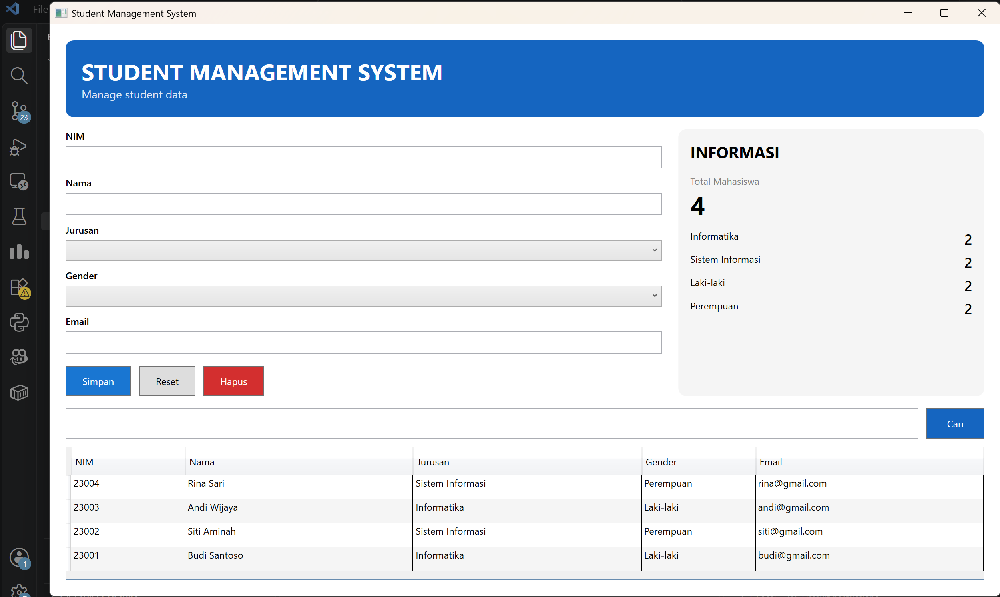
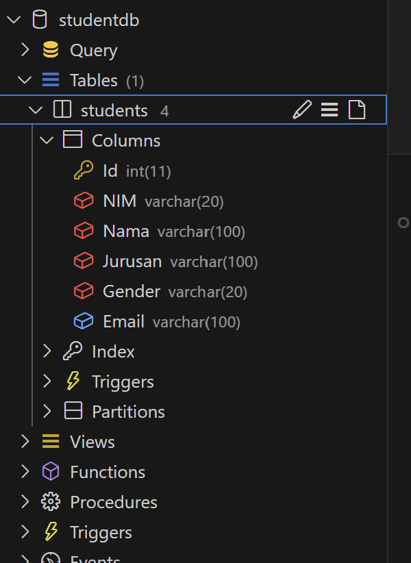

Membuat aplikasi desktop Student Management System menggunakan Windows Presentation Foundation (WPF) dengan arsitektur MVVM, Data Binding, dan koneksi ke database MySQL melalui ADO.NET.
Pada pertemuan 5 ini, dikembangkan sebuah aplikasi desktop WPF (.NET) yang mengimplementasikan pola arsitektur MVVM (Model-View-ViewModel). Aplikasi ini mampu melakukan operasi CRUD (Create, Read, Update, Delete) dan pencarian data mahasiswa yang tersimpan di database MySQL secara nyata, bukan sekadar in-memory.

Proyek ini dibagi menjadi 4 lapisan utama yang saling terpisah:
public class Student
{
public int Id { get; set; }
public string NIM { get; set; } = "";
public string Nama { get; set; } = "";
public string Jurusan { get; set; } = "";
public string Gender { get; set; } = "";
public string Email { get; set; } = "";
}
Model merepresentasikan satu baris data mahasiswa dari tabel database. Properti digunakan sebagai sumber binding ke elemen UI di XAML.
public class StudentRepository
{
private readonly string connectionString =
"Server=127.0.0.1;Port=3307;Database=studentdb;Uid=root;Pwd=;";
public List<Student> GetAll() { ... }
public void Insert(Student student) { ... }
public void Update(Student student) { ... }
public void Delete(int id) { ... }
public List<Student> Search(string keyword) { ... }
}
Repository menangani seluruh komunikasi dengan database MySQL menggunakan MySqlConnector. Setiap operasi CRUD dibungkus dalam method terpisah agar ViewModel tidak perlu mengetahui detail implementasi database.

CREATE DATABASE IF NOT EXISTS studentdb;
USE studentdb;
CREATE TABLE IF NOT EXISTS Students (
Id INT AUTO_INCREMENT PRIMARY KEY,
NIM VARCHAR(20) NOT NULL,
Nama VARCHAR(100) NOT NULL,
Jurusan VARCHAR(100) NOT NULL,
Gender VARCHAR(20) NOT NULL,
Email VARCHAR(100)
);
Tabel Students dibuat di database MySQL dengan kolom Id sebagai primary key auto increment. Data diakses langsung menggunakan ADO.NET tanpa ORM.
public class RelayCommand : ICommand
{
private readonly Action _execute;
public RelayCommand(Action execute) { _execute = execute; }
public bool CanExecute(object? parameter) => true;
public void Execute(object? parameter) => _execute();
public event EventHandler? CanExecuteChanged;
}
Kelas ini adalah jembatan antara tombol di XAML (View) dan method di ViewModel. Dengan ICommand, kita tidak perlu menulis event handler di code-behind, melainkan cukup binding ke property Command di ViewModel.
public class StudentViewModel : INotifyPropertyChanged
{
public ObservableCollection<Student> Students { get; } = new();
public int TotalStudents => Students.Count;
public int TotalInformatika => Students.Count(x => x.Jurusan == "Informatika");
public int TotalLakiLaki => Students.Count(x => x.Gender == "Laki-laki");
public ICommand SaveCommand { get; }
public ICommand DeleteCommand { get; }
public ICommand SearchCommand { get; }
public ICommand ResetCommand { get; }
private void Save() { /* Insert atau Update ke DB */ }
private void Delete() { /* Hapus dari DB */ }
private void Search() { /* Filter dari DB */ }
}
ViewModel mengimplementasikan INotifyPropertyChanged sehingga setiap perubahan data (misalnya setelah simpan/hapus) otomatis merefresh tampilan DataGrid dan panel statistik tanpa perlu kode tambahan di View.
<!-- Form Input -->
<TextBox Text="{Binding SelectedStudent.NIM, UpdateSourceTrigger=PropertyChanged}"/>
<!-- Tombol dengan Command -->
<Button Content="Simpan" Command="{Binding SaveCommand}"/>
<!-- Statistik -->
<TextBlock Text="{Binding TotalStudents}" FontSize="32" FontWeight="Bold"/>
<!-- DataGrid dengan two-way binding -->
<DataGrid ItemsSource="{Binding Students}"
SelectedItem="{Binding SelectedStudent, Mode=TwoWay}"/>
View hanya berisi deklarasi XAML dan tidak mengandung logika bisnis sama sekali. Semua interaksi dihubungkan ke ViewModel melalui Data Binding dan Command.
Pastikan server MySQL (port 3307) sudah berjalan dan database studentdb sudah dibuat, lalu jalankan:
cd pertemuan5/StudentManager
dotnet run